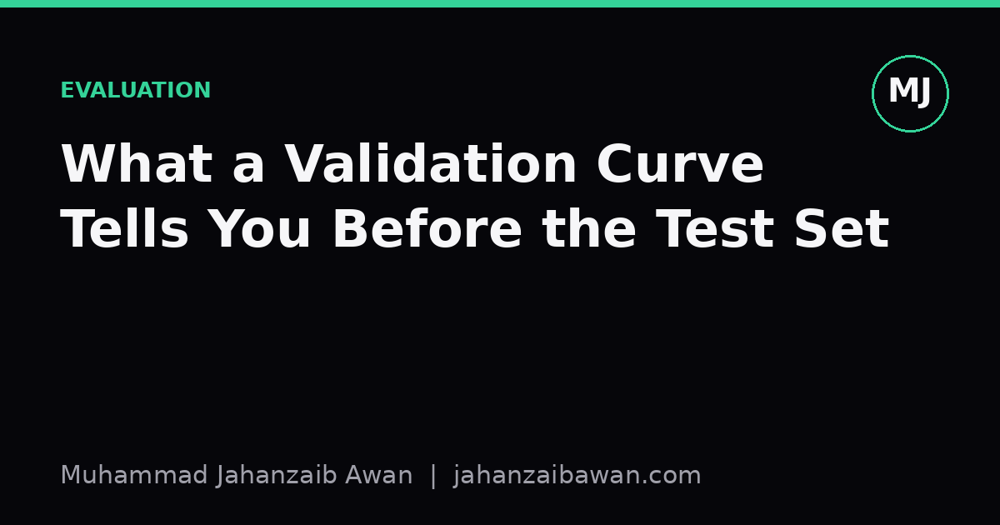

What a Validation Curve Tells You Before the Test Set
Long before you touch the test set, the gap between training and validation scores is already telling you whether your model is underfitting, overfitting, or roughly right.

Why the curve matters more than the score
When people talk about validation, they usually mean a single number: the accuracy or F1 score on a held-out fold. That number is useful, but it hides the thing I actually want to know before I go anywhere near the test set, which is whether my model's error is coming from too little capacity, too much capacity, or from noise in the data itself. A single validation score cannot answer that. A validation curve can, because it shows how training and validation performance move together as you change one thing, usually a hyperparameter that controls model complexity, such as tree depth, the regularisation strength, or the number of training epochs.
Concretely, a validation curve plots two lines against that hyperparameter: training score and validation score. Suppose I am tuning the maximum depth of a decision tree from 1 to 20, and I plot mean accuracy across five cross-validation folds for each depth, along with the training accuracy at that same depth. At depth 1, both lines sit low, say training accuracy at 0.68 and validation accuracy at 0.66. As depth increases to around 6, training accuracy climbs to 0.89 and validation accuracy climbs to 0.85, tracking each other reasonably closely. Beyond depth 12, training accuracy keeps rising towards 0.99 while validation accuracy flattens and then drifts down to 0.80. That shape, not any single point on it, is the diagnosis.
The reason this matters before the test set is simple: the test set is meant to be touched once, at the end, to estimate how the final chosen model will generalise. If I use it to decide between depth 6 and depth 12, I have quietly turned it into another validation set, and its estimate is no longer honest. The validation curve lets me make that decision using cross-validation folds instead, which I am allowed to inspect and re-inspect as much as I like, precisely because they were never promised to be a clean, one-shot estimate.
Reading the three regimes
The low-depth region in my example, where both training and validation accuracy are low and close together, is underfitting. The model is too simple to capture the structure in the data, so it does badly everywhere, train and validation alike. The fix is not more data, since a simple model will not use extra rows any better; the fix is more capacity, more relevant features, or a less constrained algorithm. I have seen people respond to a low validation score by collecting thousands more labelled examples, only to find the score barely moves, because the bottleneck was never data volume.
The middle region, where training and validation accuracy rise together and stay close, is the sweet spot: the model has enough capacity to fit real patterns without yet memorising noise. This is also where the gap between the two lines is small and roughly stable as complexity increases slightly. In my depth example, depth 6 sits here, with a gap of about four percentage points between training and validation accuracy, which is a reasonable amount of optimism to expect from any model that has seen its training data.
The high-depth region is overfitting: training accuracy keeps improving because the tree is carving out rules that describe individual training rows, while validation accuracy stalls or falls because those rules do not describe new rows. The tell-tale sign is a widening gap, not a low validation number by itself. A validation score of 0.80 could be the ceiling of a hard problem, or it could be a symptom of a model that memorised its way to 0.99 on training data while validation quietly slid backwards. You only see the difference by plotting the curve, not by reading the final score in isolation.

What to actually do with the shape
Once I can see which regime I am in, the next action follows quite mechanically. Underfitting calls for more expressive models, richer features, or removing overly aggressive regularisation. Overfitting calls for the opposite: stronger regularisation, fewer parameters, early stopping, or more training data if the gap is due to variance rather than an inherently noisy target. A validation curve tells you which lever to pull before you waste a cycle guessing.
It is worth being honest about what the curve does not tell you. It does not tell you whether your cross-validation folds themselves are leaking information, for instance through shared groups, time order, or preprocessing fitted on the whole dataset before splitting. A beautifully behaved validation curve built on leaky folds will still mislead you, just more smoothly. So the curve is a diagnostic on top of a trustworthy split, not a replacement for building one.
It also will not tell you how the model behaves on genuinely new data collected after some distribution shift, which is a separate question from bias and variance. I treat the validation curve as the tool for choosing complexity and catching gross overfitting during development, and I treat the test set as the tool for a final, honest estimate, used exactly once, after the curve has already told me roughly where to sit on the complexity axis.
The practical habit I would recommend is this: before tuning anything seriously, plot the validation curve across a sensible range of the complexity parameter you care about, look at the shape of the gap rather than the height of either line, and pick a setting from the flat, well-behaved region rather than the point that maximises validation score exactly. That point is often slightly into the overfitting side, chasing noise in the validation folds themselves. Choosing a slightly simpler model from the stable region tends to generalise better, and it leaves the test set free to do the one job it was set aside for.